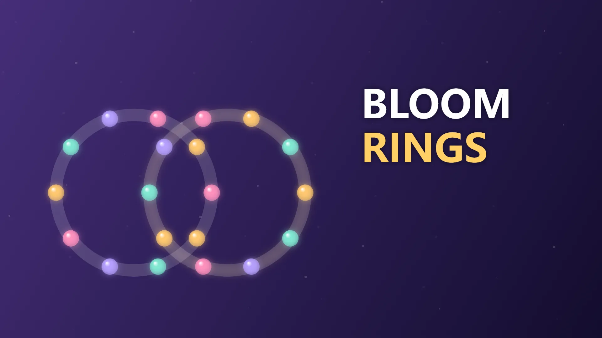

Bloom Rings
Rotate overlapping rings and gather every bead of a color to make it bloom. Pebbles, locked rings and move limits deepen the puzzle.

Opening the English game… Continue to play
Rotate overlapping rings and gather every bead of a color to make it bloom. Pebbles, locked rings and move limits deepen the puzzle.

Opening the English game… Continue to play